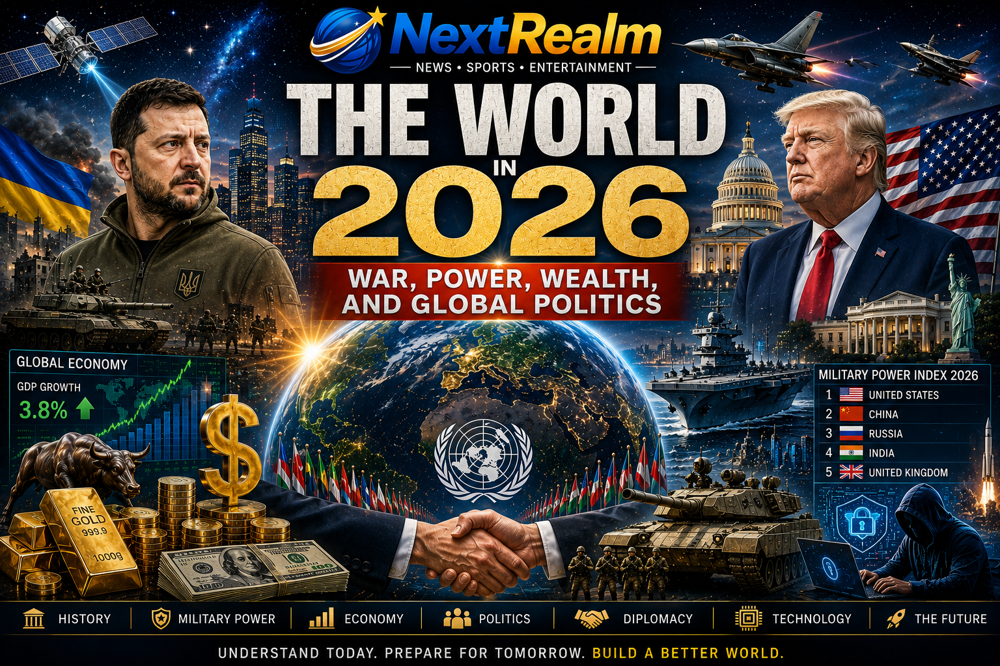

Published: 25 July 2026
Category: World News

The world in 2026 is more connected, powerful, and technologically advanced than ever before. Nations continue to compete politically, economically, and militarily while maintaining complex alliances and diplomatic relationships. Understanding how past wars shaped the modern world is essential to understanding global power today.
World War I began on 28 July 1914 and ended on 11 November 1918. It was one of the deadliest conflicts in human history and involved many of the world's major powers.
The assassination of Archduke Franz Ferdinand of Austria on 28 June 1914 was the immediate cause of the war. However, political tensions, military alliances, imperial ambitions, and nationalism among European nations had been growing for years before the conflict began.
The Allied Powers included the United Kingdom, France, Russia, Italy, and later the United States. The Central Powers included Germany, Austria-Hungary, the Ottoman Empire, and Bulgaria.
The war ended when Germany signed the Armistice Agreement on 11 November 1918. Millions of lives had been lost, and Europe was left economically and politically weakened.
World War I reshaped global politics, led to the collapse of several empires, and set the stage for World War II. It also resulted in the creation of the League of Nations, which was an early attempt at maintaining international peace.
World War II began on 1 September 1939 when Germany invaded Poland and ended on 2 September 1945. It remains the deadliest military conflict in human history, involving more than 100 million people from over 30 countries.
The major causes included the harsh conditions imposed on Germany after World War I, the rise of Adolf Hitler and the Nazi Party, economic instability, and aggressive territorial expansion by Germany, Italy, and Japan.
The Allied Powers included the United States, the United Kingdom, the Soviet Union, China, and France. The Axis Powers included Germany, Italy, and Japan.
During World War II, Nazi Germany carried out the Holocaust, resulting in the deaths of approximately six million Jews and millions of other victims. It remains one of the darkest chapters in human history.
In August 1945, the United States dropped atomic bombs on Hiroshima and Nagasaki in Japan. The bombings led to Japan's surrender and brought the war to an end.
Germany surrendered in May 1945, and Japan formally surrendered on 2 September 1945. The war ended with the defeat of the Axis Powers.
World War II led to the creation of the United Nations, the beginning of the Cold War, and major advancements in science, technology, and international diplomacy. Modern global politics and military alliances are still influenced by the events of World War II.
Military power in 2026 is determined by more than just the number of soldiers. Modern military strength includes nuclear weapons, advanced technology, cyber warfare capabilities, air superiority, naval power, space programs, and defence spending.
The United States remains the world's most powerful military nation. It possesses one of the largest nuclear arsenals, the world's most advanced military technology, and the highest defence budget globally. The United States also leads in space technology and cyber warfare capabilities.
China continues to expand its military capabilities through technological innovation, naval expansion, and artificial intelligence. It possesses nuclear weapons and maintains one of the largest armed forces in the world.
Russia remains one of the world's leading military powers due to its massive nuclear arsenal, advanced missile systems, and strategic military capabilities.
India has become one of the fastest-growing military powers in the world. Its investments in defence technology, nuclear capabilities, and space exploration continue to strengthen its global influence.
The United Kingdom maintains one of the world's most sophisticated military forces with nuclear capabilities, advanced intelligence services, and strong alliances through NATO.
- Nuclear Weapons.
- Air Force Capabilities.
- Naval Power.
- Cyber Warfare Technology.
- Space Technology.
- Defence Budgets.
- Military Alliances and Global Influence.
Economic power plays a major role in determining a country's influence in global affairs. Nations with strong economies are often able to invest heavily in education, healthcare, technology, infrastructure, and national defence.
The world's richest economies in 2026 include:
- United States
- China
- Germany
- Japan
- India
- United Kingdom
- France
These nations are global leaders in technology, manufacturing, finance, healthcare, and innovation.
Several countries continue to experience rapid economic growth, including:
- Nigeria
- Indonesia
- Brazil
- Vietnam
- South Africa
- Mexico
These countries are expanding their industries and attracting international investments, making them important players in the global economy.
Some countries continue to struggle with economic challenges caused by conflict, political instability, poor infrastructure, and limited access to education and healthcare.
Economic development remains one of the greatest challenges facing many nations today.
A strong economy is often built upon:
- Education.
- Innovation and Technology.
- Political Stability.
- Natural Resources.
- Infrastructure Development.
- International Trade.
- Good Governance.
International relationships play a major role in maintaining global peace, economic cooperation, and military alliances. Countries work together through diplomacy, trade agreements, and international organizations.
NATO is one of the world's most powerful military alliances. It consists of member nations that agree to defend one another in times of conflict.
The United Nations was established after World War II to promote peace, security, human rights, and international cooperation among nations.
BRICS is an economic alliance consisting of Brazil, Russia, India, China, and South Africa. The organization continues to expand its global economic influence.
The United States and China maintain one of the most important and complex political and economic relationships in the world. While they cooperate economically, they also compete in technology, trade, and global influence.
Russia and China have strengthened their diplomatic and economic ties in recent years through trade agreements and strategic partnerships.
The African Union promotes economic development, political cooperation, and peace among African nations.
The European Union remains one of the world's largest political and economic unions, promoting free movement of people, goods, and services among its member states.
Strong diplomatic relationships help countries avoid conflict, promote economic growth, and solve global challenges such as climate change, cybersecurity, and international security.
Understanding the world's history, political relationships, economic power, and military capabilities helps us appreciate the importance of peace and international cooperation. The world of 2026 is shaped by both the lessons of the past and the opportunities of the future. Together, nations have the ability to build a safer, stronger, and more prosperous world for generations to come.